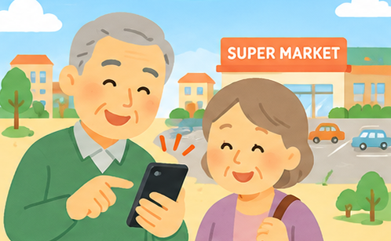

- お店を
さがせる - ページが
見られる - 行き方が
わかる
どうやって さがしますか？
どの市・町ですか？
いまいる場所から さがす
近くのお店を さがすために、現在地を使います。
現在地は、お店までの距離を はかるためだけに 使います。保存したり、ほかへ送ったりは しません。
お店の名前で さがす
営業時間などは 変わることがあります。
お出かけ前に お店に ご確認ください。
近くのお店を、かんたんに さがせます。

近くのお店を さがすために、現在地を使います。
現在地は、お店までの距離を はかるためだけに 使います。保存したり、ほかへ送ったりは しません。
営業時間などは 変わることがあります。
お出かけ前に お店に ご確認ください。